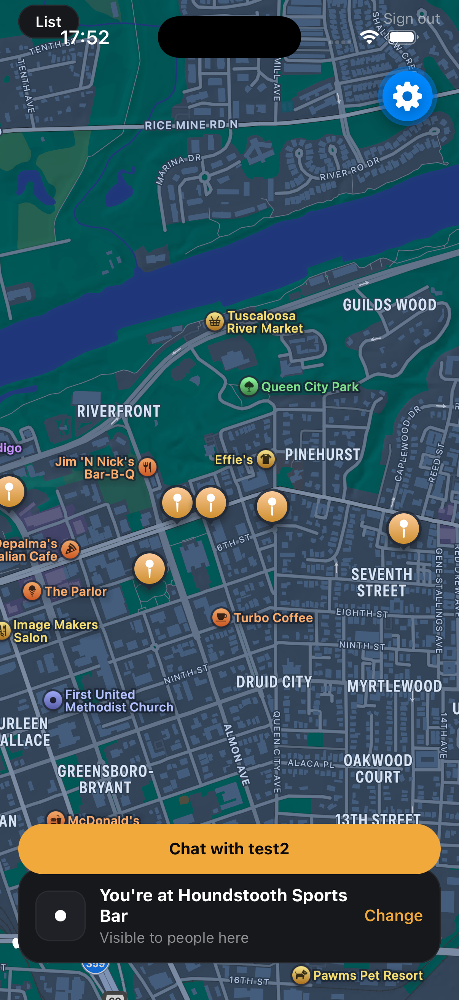
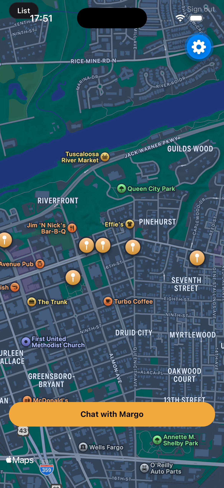
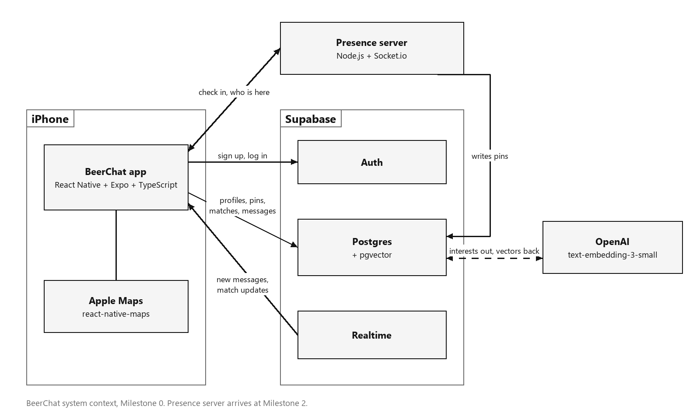

Real-time, venue-level social presence with double opt-in meetups
CS 415/515 Software Engineering — Project Milestone 1 (Build It)
| Team | Arda Alici (aalici@crimson.ua.edu) · Margulan Baizhakyp (mbaizhakyp@crimson.ua.edu) · Karthik Gaur (kgaur@crimson.ua.edu) |
| Repository | github.com/Arcce9/BeerChat |
| Git tag | milestone-1 |
| Submitted | September 30, 2026 |
Repository: https://github.com/Arcce9/BeerChat — tag milestone-1 is the exact submitted version. The app is not publicly deployed (it is a mobile app; distribution for grading is via local run in the iOS Simulator per the instructions in §6).
Milestone 1 delivers the complete working core loop, end to end, live between two devices:
sign up → set profile → pin a venue → check in → discover people → mutual "open to meet" → live ephemeral chat
Every P0 backlog story (BC-01…BC-07) plus the BC-11 map-fallback is implemented and verified on two simulators side by side (§7). Authentication is real (Supabase Auth with persisted sessions), all privacy rules are enforced in the database with Row Level Security, and every live update (presence, matching, chat) is pushed over WebSockets — nothing is mocked and nothing polls.


Wireframes of all seven screens are in Fig. 4 (§5.7); the full visual design canvas is linked in docs/DESIGN.md.
Problem. People go out to bars and social venues surrounded by others they might genuinely like — and leave without meeting any of them. Existing apps optimize pre-planned events or remote swiping, not the people already in the room.
Product. BeerChat lets a user pin the venue they're heading to, check in on arrival, optionally become visible to others at that venue (first name + interests only), send a private "open to meet?", and — only when it's mutual — get a short-lived chat to find each other in person.
Users. Primary: students and young professionals going out alone or in small groups (personas in the Milestone 0 proposal). Secondary: venues that benefit from social traffic.
| In the MVP (shipped in M1) | Deliberately out (unchanged from M0) | Next (M2) |
|---|---|---|
| Email/password accounts, first-name + interests profile, map with seeded venues + list fallback, one pin per user (heading/arrived), per-venue visibility opt-in, live "who's here", double opt-in matching, withdrawal dissolving matches live, realtime 1-on-1 chat that dies with the match | Exact GPS sharing, bios/photos/followers, group chat, venue reviews, Android polish, push notifications | Socket.io presence service, interest-embedding ranking (OpenAI + pgvector), time-based chat expiry, automated tests + CI |
Scope change log (agile, small magnitude): (1) discoverable moved from profile to check-in — visibility is now per-venue-per-night, which matches the privacy story better; (2) added rule "consent is ongoing": withdrawing interest dissolves an existing match and its messages for both people — adopted after two-device testing; (3) BC-11 venue-list fallback implemented as planned in M0's risk note.
We use incremental development with feature-gated steps — a lightweight Scrum variant. The product is divided into steps (accounts → venues → presence → matching → chat), each gated by an observable two-device acceptance test rather than a timebox; the app is runnable after every step, which directly satisfies the course's agile delivery requirement. We chose behavior gates over timeboxed sprints because the team works in irregular sessions around class schedules; the gate keeps every merge shippable regardless of when work happens. AI-assisted development (Claude Code as orchestrating pair-programmer) was used throughout, with every change reviewed, tested on-device, and committed by a team member — this also prepares the disclosed AI-workflow deliverable of Milestone 3.
npx tsc --noEmit); (2) the item's acceptance test passes in the two-simulator run; (3) its privacy rules are enforced by Row Level Security in the database, not only by UI; (4) it is committed with a step-referencing message, and any bug found on the way has a symptom/cause/fix entry in docs/BUGLOG.md.Full backlog with points and engineering tasks: docs/BACKLOG.md. All P0 stories are done and verified; statuses below are as of this submission.
| ID | User story (condensed) | Pri | Status |
|---|---|---|---|
| BC-01 | Sign up / log in with email + password; my data belongs to me | P0 | Done — verified §7.1–2 |
| BC-02 | First name + 3–5 interests on my profile | P0 | Done |
| BC-03 | See venues on a map and pick where I'm going | P0 | Done |
| BC-04 | Check in so others know I'm open to meeting (explicit opt-in) | P0 | Done |
| BC-05 | See who else is checked in at my venue, live | P0 | Done |
| BC-06 | Connections require both people to agree (one-sided interest invisible) | P0 | Done |
| BC-07 | Live 1-on-1 chat with my match | P0 | Done |
| BC-11 | Plain venue list fallback if the map won't load | P1 | Done |
| BC-08/09/10 | Interest-ranked people list · sub-second presence · timed chat expiry | P1 | Milestone 2 |
Use cases for each main backlog item — actors, main/alternate flows, pre/postconditions — are in docs/USE-CASES.md (UC-1 account & profile, UC-2 pin venue, UC-3 check in & discover, UC-4 double opt-in match with withdrawal, UC-5 ephemeral chat). §5.4 details the two most important ones at component level.
The M0 architecture stands: React Native/Expo app ↔ Supabase (Auth, Postgres + RLS, Realtime). As built in M1, the app talks only to Supabase; the Socket.io presence server and OpenAI embedding path arrive in M2. Server-side logic that must see more than any single user may see lives in Postgres triggers.

erDiagram
PROFILE ||--o| PIN : "has at most one"
VENUE ||--o{ PIN : hosts
PROFILE ||--o{ MEET_REQUEST : "sends (readable only by sender)"
MATCH }o--|| VENUE : at
PROFILE ||--o{ MATCH : "participates"
MATCH ||--o{ MESSAGE : "contains (ON DELETE CASCADE)"
sequenceDiagram
participant A as Device A
participant DB as Postgres (RLS + triggers)
participant B as Device B
A->>DB: INSERT meet_request A→B (only A can read it)
B->>DB: INSERT meet_request B→A
DB->>DB: trigger sees both sides → INSERT match
DB-->>A: Realtime match INSERT
DB-->>B: Realtime match INSERT
B->>DB: DELETE request B→A (withdraw)
DB->>DB: trigger deletes match, messages cascade
DB-->>A: Realtime match DELETE → both dismiss
Pin lifecycle (state machine): (none) →I'm heading there→ heading →I'm here→ arrived →Leave→ (none), with discoverable togglable in either active state; visibility to others ≡ discoverable = true, enforced by RLS.
app/src/ ├── app/index.tsx AUTH GATE: session → profile → home routing (+ SignIn, ProfileSetup) ├── components/ │ ├── MapHome.tsx HOME: map, venue sheet, pin lifecycle, status card, list fallback; │ │ owns both realtime channels and all pin/match state │ ├── PeopleHere.tsx presence list + "Open to meet?" (props-driven child) │ ├── MatchScreen.tsx match reveal overlay (pure presentational) │ └── ChatScreen.tsx chat history + live message subscription └── lib/ supabase.ts (the single configured client) · theme.ts (design tokens)
Boundary rule: only MapHome owns realtime subscriptions and mutation state; overlays are children driven by props/callbacks. The server interface is the schema — RLS policies are the API contract (no custom endpoints in M1):
| Table | Client operations | Allowed when (RLS) |
|---|---|---|
| profiles | select / insert / update | own row; select also while owner has a discoverable pin |
| venues | select | any signed-in user |
| pins | select / insert / update / delete | own row; others' rows only where discoverable = true |
| meet_requests | insert / select / delete | requester = self; targets can never read them |
| matches | select | participant; created/deleted only by triggers |
| messages | select / insert | match participant; insert requires sender = self |
Realtime: postgres_changes on pins/matches/messages (RLS-filtered per subscriber) plus one data-free broadcast ("pins changed — refetch"), needed because RLS correctly suppresses UPDATE events whose new row a subscriber may no longer see (found in two-device testing; documented in docs/BUGLOG.md).
UC-3 Presence. MapHome keeps a pinsVersion counter. Every mutation (head there / I'm here / leave / toggle visibility) writes its row, then broadcasts. Both event sources just bump the counter; effects depending on it refetch own-pin, venue counts, and the people list. The pattern is event → invalidate → refetch: events carry nothing the UI trusts — every query is answered by the database under RLS, so the UI can never show data the viewer isn't entitled to.
UC-4 Matching. PeopleHere renders the request button from the user's own outgoing requests (toggle = insert/delete one row). Match detection lives in MapHome's matches channel: an INSERT involving the user triggers profile enrichment and the match screen; a DELETE with the current match id clears match, chat, and pill in one update. Privacy is structural: no policy exists that could return a one-sided request to its target.
Two ADRs are in docs/adr/: ADR-0001 — Supabase BaaS instead of a custom backend for the MVP (end-to-end in days, $0, RLS as structural privacy; accepts free-tier pause risk and vendor coupling, with Socket.io arriving M2 where BaaS realtime is weakest). ADR-0002 — double opt-in via SECURITY DEFINER database triggers (atomic with the request write, race-free via the ordered unique pair, "messages cannot outlive consent" expressed as a cascade; accepts SQL-resident logic kept in versioned migrations).
Observer (pub-sub): Realtime channels push database change events to subscribed devices — presence and chat are push-shaped; polling would be stale or would hammer the free tier. Mediator: the matching trigger mediates between two users who must not observe each other's intent; each talks only to the database, which alone sees both sides. (Also present: Singleton for the configured Supabase client; the pin state machine of §5.2.)
docs/DESIGN.md.Seven-screen dark-theme design (Fig. 4) implemented 1:1 from the team's design canvas (tokens centralized in lib/theme.ts); multi-screen flow sign-in → profile → map → venue sheet → people → match → chat; one-handed night-out ergonomics (≥44pt targets, bottom-anchored actions). React Native + Expo compiles for iOS and Android from one codebase with stock components and safe-area handling; iOS is the M1 verification platform, the only platform-variant piece being map tiles — and BC-11's venue list doubles as the no-map path. Accessibility baseline: contrast-checked amber-on-near-black palette, text redundancy for color cues.
| Requirement | Version / note |
|---|---|
| macOS + Xcode | Xcode 16+, iOS Simulator runtime installed (open Xcode once) |
| Node.js | v20+ (node --version) |
| Expo Go | installed automatically into the simulator on first run; no Apple developer account needed |
git clone git@github.com:Arcce9/BeerChat.git cd BeerChat/app npm install npx expo start # press i → iOS Simulator; shift+i to add a second simulator
Environment variables (app/.env.example): EXPO_PUBLIC_SUPABASE_URL, EXPO_PUBLIC_SUPABASE_ANON_KEY. app/.env is committed deliberately, pointing at the team's hosted demo database, so the TA has zero configuration. The value is Supabase's publishable key — the class of key a released mobile app ships publicly by design; every table is RLS-protected and no privileged key exists in the repository.
Migrations & seed data: already applied to the hosted database — no action needed. The complete, ordered schema (six migrations: profiles → venues/pins + six seeded Tuscaloosa venues → presence/RLS → matching → unmatch → chat) is in supabase/migrations/; a fresh instance is stood up with supabase link && supabase db push.
Demo accounts (profiles and overlapping interests pre-set; new signups also work — email confirmation is disabled for the demo):
| User | Password | |
|---|---|---|
| Alex (device A) | ta.demo1@beerchat.dev | BeerChat-M1-demo1 |
| Sam (device B) | ta.demo2@beerchat.dev | BeerChat-M1-demo2 |
⚠️ Free-tier note: Supabase pauses idle free projects. If the app shows network errors on first launch, the database is likely waking (2–3 min) — we also check it daily during grading; contact us if needed.
Two simulators, the two demo accounts, ≈10 minutes. Same script as docs/VERIFICATION.md.
| # | Do | Expect | Verifies |
|---|---|---|---|
| 1 | Device A: sign in as demo 1 | Dark Tuscaloosa map, six amber venue pins | BC-01/03 |
| 2 | Kill and reopen the app | Still signed in | session persistence |
| 3 | Tap List (top-left) | Plain venue list; a row opens the venue sheet | BC-11 |
| 4 | Venue → I'm heading there; relaunch | Status card persists ("Heading to …") | BC-03 |
| 5 | I'm here + visibility ON (both devices, same venue) | "here now" counts; "See who's open to hello" | BC-04 |
| 6 | Open the people list on both | Each lists the other (first name + interests), appearing live | BC-05 |
| 7 | A: visibility OFF | A vanishes from B's list within ~1s, no refresh | RLS + realtime |
| 8 | A: Open to meet? on B | A shows "Waiting on …"; B sees nothing at all | BC-06 privacy |
| 9 | B: Open to meet? on A | Both devices simultaneously: "YOU BOTH SAID YES" + shared interests | BC-06 |
| 10 | A: Say hi, message; B: chat pill, reply | Messages appear on the other device in real time | BC-07 |
| 11 | Either: tap "Waiting on…" to withdraw | Match screen, chat pill and conversation vanish on both devices | consent is ongoing |
Known M1 limitations: iOS-verified (Android planned); manual check-in (geofencing M2); time-based chat expiry designed but not yet implemented (chat currently dies on withdrawal); free-tier database wake-up delay possible.
| Member | Milestone 1 contribution |
|---|---|
| Karthik Gaur | Built Steps 0–2 of the MVP: the Expo/TypeScript scaffold and simulator setup, the Supabase client, sign-in/sign-up and profile-setup screens with the profiles migration, and the map home with the seeded venues and "heading there" pins; maintains the prioritized backlog and use cases. |
| Arda Alici | Built Steps 3–4: venue check-in, the per-venue visibility toggle, the live "who's here" list over Realtime, and the trigger-based double opt-in matching engine with live unmatch on withdrawal; designed the seven-screen dark-theme UI the app implements and applied it as the design restyle. |
| Margulan Baizhakyp | Built Step 5 (realtime ephemeral chat), the BC-11 venue-list fallback, and the matched-profiles RLS fix; packaged the repository for Milestone 1 (migrations, demo accounts, restructure) and wrote the Milestone 1 report, design document, ADRs, bug log, and TA verification guide. |